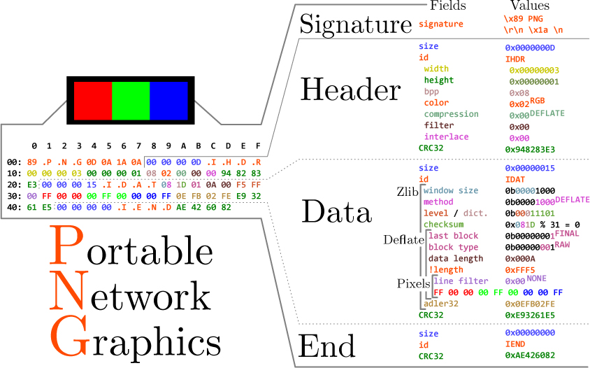
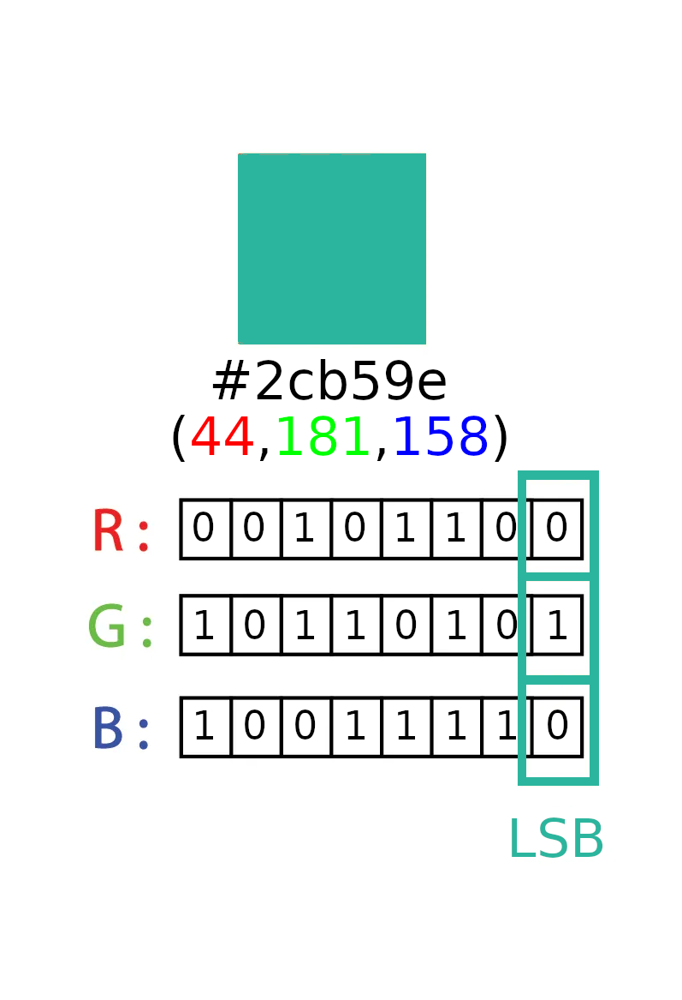

You can find the slides here

The PNG format is broken into what it calls "chunks". There are three or four chunks that are required for the file to be a valid PNG format. These are called "critical chunks". The three in the annotated hex above are:
Earlier I said their are 3 or 4 critical chunks. The fourth critical chunk is contingent on the color byte in the header being 0x03, which is a palette index color type. This chunk would be the palette index itself.
There are also ancillary chunks that give metadata to tell parsers more specifically how to parse a particular image. There are a ton of ancillary chunks built into the spec. A few we could inject data into are:
gAMA: Gama chunk, This chunk is supposed to get ignored if there is an sRGB or iCCP chunk. The chunk is supposed to be a 4 byte unsigned integer but since it gets ignored we should be able to inject how much every data we want.
cHRM: Chromaticites chunk, Also ignored if there is an sRGB or iCCP chunk so we should be able to inject whatever we want in this chunk.
tEXt: Text chunk, this chunk has a specific format that has to be followed for it to be a valid chunk. Invalid ancillary chunks are supposed to be ignored but some parsers will throw an error at the user so we should follow it to prevent this.
There are predefined keywords that we can use. The biggest problem with using these keywords is windows' explorer.exe because it'll be shown in the properties tab.
zTXt: tEXt chunk but compressed
iTXt: tEXt chunk but utf8 encoded
The PNG format allows us to create our own chunks. The spec calls them "private chunks". There is a specific format we need to follow with the naming. The letters themself don't matter but the casing does.
+-----------+---------------+---------------+--------------+------------------+ | | First letter | Second letter | Third Letter | Fourth Letter | +===========+===============+===============+==============+==================+ | Uppercase | Critical | Public Chunk | Reserved | Not Safe to Copy | | | Chunk | | | | +-----------+---------------+---------------+--------------+------------------+ | Lowercase | Ancillary | Private Chunk | N/A | Safe to Copy | | | Chunk | | | | +-----------+---------------+---------------+--------------+------------------+
Most of the chunk options I've already talked about. The fourth one is a bit weird since it's for image editors. "Safe to Copy" means that if you edit the image the chunk will get transfered over to the new image. It is telling the editor the data in the chunk isn't dependent on the pixel data.
The chunk I used as an example was stEg.
You can find my demo code here.

In the annotated hex above its using color type 0x02 so every pixel is 3 bytes, one for r, g, and b. This means we can have 3 bits per pixel. So if our image is 500x500 we have 250,000 pixels to work with or 750,000 bits (93750 bytes, ~93 kilobytes). So with this method our paylod must be considerably smaller than our png. The colors also won't perceptibly change.